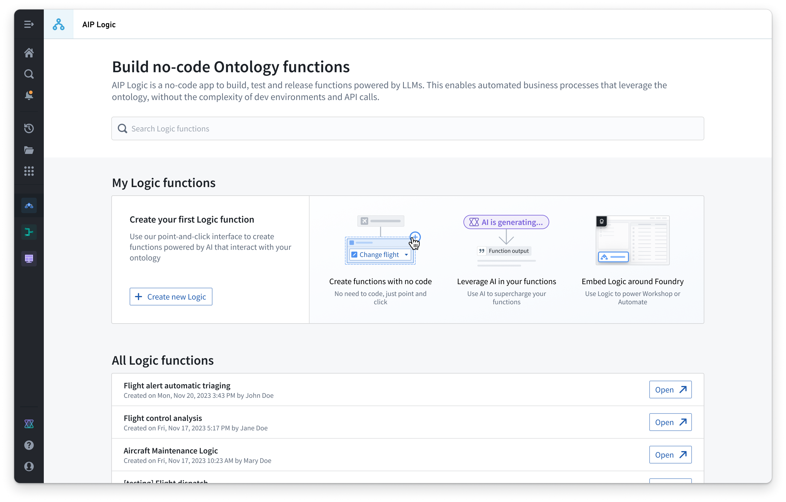

![One AIP Logic "Use LLM" block which is given a prompt "You are my supply chain helper agent. Find other emails that describe similar events to those described in the input email (at any location). Look only at the email body. Determine the best solution based on what has worked in the past. Return your one solution recommendation, do not list findings from every email." The block has the Query objects tool setup for the "[Titan] Distribution Center Email" object and is provided access to the email content property. The output is set as variable name "recommended solution" in type "primitive, string".](/docs/resources/foundry/logic/block-use-llm-prompt.png)
AIP Logic is a no-code development environment for building, testing, and releasing functions powered by LLMs. AIP Logic enables you to build feature-rich AI-powered functions that leverage the Ontology without the complexity typically introduced by development environments and API calls. Using Logicâs intuitive interface, application builders can engineer prompts, test, evaluate and monitor, set up automation, and more.
You can use AIP Logic to automate and support your critical tasks, whether connecting key information from unstructured inputs to your Ontology, resolving scheduling conflicts, optimizing asset performance by finding the best allocation, reacting to disruptions in your supply chain, or more.

Logic functions can also be automated so that Ontology edits can be automatically applied or staged for human review.
Use Foundry Branching to develop Logic functions in isolation. You can also monitor the health and performance of your Logic functions through metrics, including success and failure counts and execution duration.
AIP Logic provides an intuitive interface to leverage the Ontology and LLMs via a Logic function that takes inputs (like Ontology objects or text strings) and can return an output (objects and/or strings) or make edits to the Ontology. For example, the LLM-powered function below takes input data from an Ontology object and cross-references that data with a customer email to recommend a solution for a given issue based on previous resolutions.
AIP Logic is built on the same rigorous security model that governs the rest of the Palantir platform, including user and function permissions. These platform security controls grant an LLM access only to what is necessary to complete a task.
:::callout{theme="warning" title="Read-time enforcement only"} Row and column access controls (including restricted views, object security policies, and property security policies) filter what the model can read on a user's behalf. The model can never see data the user is not authorized to read. These controls do not extend to the model's output or any Ontology edits it composes. To keep data protected as it flows downstream, pair these controls with a marking or Classification-based Access Control. For the full model, see Access control propagation. :::
Learn more about the core concepts of AIP Logic or get started with building a Logic function. When evaluating functions, AIP Evals provides a results analyzer that categorizes failing test cases by root cause and suggests targeted prompt edits to improve outcomes.